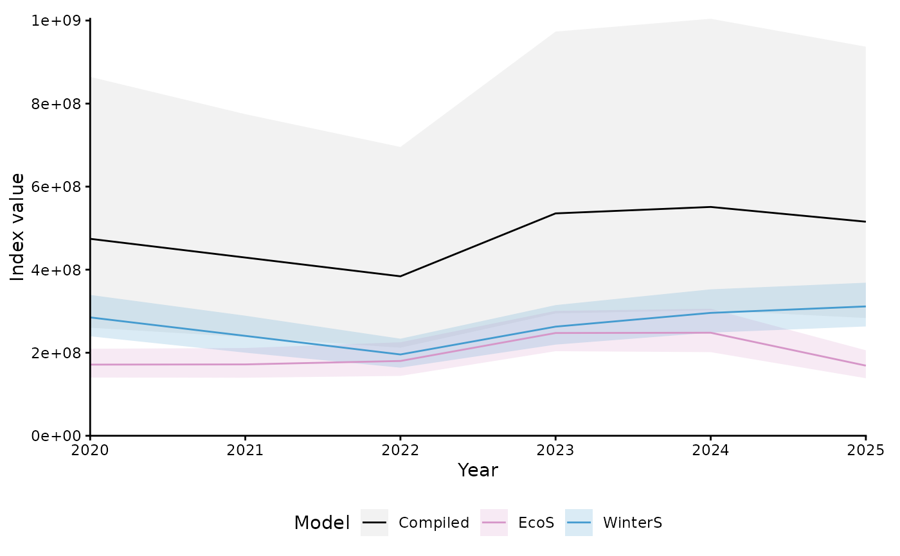
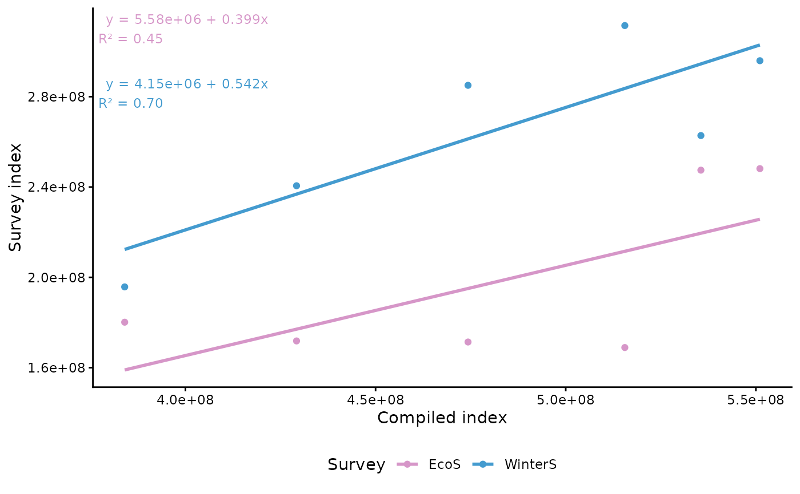
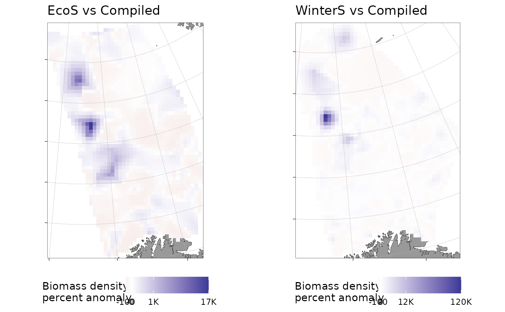

Compare individual survey indices to a compiled sdmTMB index
Source:R/compare-surveys.R
compare_surveys.RdFits separate sdmTMB models for individual survey series and compares the
resulting indices to a compiled reference index. Survey-specific prediction
grids are built from the spatial footprint of each survey using a concave
hull (make_survey_prediction_region()). The output can be plotted as a time
series, a scatter plot, or a spatial prediction-difference map.
Usage
compare_surveys(
data,
compiled_index,
compiled_model = NULL,
surveys = NULL,
newdata,
object_crs = NULL,
formula = NULL,
family = NULL,
spatial = NULL,
spatiotemporal = NULL,
control = NULL,
mesh_cutoff = 30,
offset_col = NULL,
survey_col = "cruiseseries",
bias_correct = FALSE,
level = 0.95,
area = 1,
silent = TRUE,
nsplit = 3,
n_workers = 1,
future_seed = TRUE,
concavity = 5,
reference_label = "Compiled",
verbose = TRUE
)Arguments
- data
A data frame containing the modelling data, with a column identifying the survey series (see
survey_col) andX/Ycoordinates.- compiled_index
A data frame of the compiled reference index, with columns
year,est,lwr,upr,se.- compiled_model
A fitted
sdmTMB::sdmTMB()model for the compiled index, orNULL(default). When provided, model settings (family, spatiotemporal structure, time column, CRS) are inherited unless overridden, and spatial prediction differences are computed. WhenNULL, spatial differences are skipped andformula,familyandobject_crsmust be supplied.- surveys
Character vector of survey series names to compare. If
NULL(default), all unique values ofdata[[survey_col]]are used.- newdata
A data frame (the global prediction grid) used to build survey-specific grids by spatial filtering.
- object_crs
Coordinate reference system. If
NULL, taken fromcompiled_model.- formula
Model formula. If
NULL, inherited fromcompiled_model.- family
sdmTMB family. If
NULL, inherited fromcompiled_model.- spatial, spatiotemporal
Random field settings. If
NULL, inherited fromcompiled_model(falling back to"on"/"ar1").- control
An
sdmTMB::sdmTMBcontrol()object. IfNULL, inherited fromcompiled_model(falling back tosdmTMBcontrol(newton_loops = 2)).- mesh_cutoff
Numeric. Mesh cutoff (km) for the survey models. Default
30.- offset_col
Character. Column in
datato use as a log-offset (e.g."swept_area").NULL(default) means no offset.- survey_col
Character. Column identifying the survey series. Default
"cruiseseries".- bias_correct
Logical. Apply bias correction? Default
FALSE.- level
Numeric. Confidence level for index intervals. Default
0.95.- area
Grid cell area for index calculation. Passed to
sdmTMB::get_index_split().- silent
Logical. Suppress model output? Default
TRUE.- nsplit
Integer. Number of splits for
sdmTMB::get_index_split(). Default3.- n_workers
Integer. Number of parallel workers. Default
1.- future_seed
Logical or integer. Future-compatible random seed.
- concavity
Numeric. Concavity for the survey footprint hulls (see
make_survey_prediction_region()). Default5.- reference_label
Character. Label for the compiled reference index. Default
"Compiled".- verbose
Logical. Show progress messages (via cli when installed)? Default
TRUE.
Value
An object of class sdmTMB_survey_comparison, a list with sanity,
index and grid. Carries crs, reference_label and surveys
attributes.
Examples
# \donttest{
data(sebastes)
sub <- subset(sebastes, cruiseseries %in% c("EcoS", "WinterS") & year >= 2020)
# A simple "compiled" full-domain model and index, used as the reference.
# `biomass` (raw catch), not `density`, is the response here: `density` is
# already swept_area-normalised, so using it together with the swept_area
# offset below would double-correct for effort.
compiled_mesh <- sdmTMB::make_mesh(sub, c("X", "Y"), cutoff = 50)
compiled_model <- sdmTMB::sdmTMB(
biomass ~ 0 + as.factor(year), data = sub, time = "year",
mesh = compiled_mesh, family = sdmTMB::tweedie(), spatiotemporal = "off",
offset = log(sub$swept_area)
)
full_region <- make_survey_prediction_region(sub, crs = 32633, concavity = 5)
full_grid <- sdmTMB::replicate_df(
make_prediction_grid(full_region, resolution = 20), "year", unique(sub$year)
)
# swept_area is in square nautical miles, so cell area must be too: convert
# the 20 km grid resolution to nautical miles before squaring.
cell_area <- (20 / 1.852)^2
compiled_index <- sdmTMB::get_index_split(
compiled_model, newdata = full_grid, area = cell_area, nsplit = 3, silent = TRUE
)
#> Bias correction is turned off.
#> It is recommended to turn this on for final inference.
#> Bias correction is turned off.
#> It is recommended to turn this on for final inference.
#> Bias correction is turned off.
#> It is recommended to turn this on for final inference.
sc <- compare_surveys(
data = sub, compiled_index = compiled_index, compiled_model = compiled_model,
surveys = c("EcoS", "WinterS"), newdata = full_grid, object_crs = 32633,
mesh_cutoff = 50, offset_col = "swept_area", area = cell_area
)
#> ⠙ Fitting 2 survey models
#> ✔ Fitting 2 survey models [5ms]
#>
#> ✔ EcoS: model OK
#> ✔ WinterS: model OK
#> ⠙ Building 2 survey prediction grids
#> ✔ Building 2 survey prediction grids [4ms]
#>
#> ⠙ Computing 2 survey indices
#> ✔ Computing 2 survey indices [4ms]
#>
#> ✔ EcoS: index done
#> ✔ WinterS: index done
#> ⠙ Computing spatial prediction differences
#> ✔ Computing spatial prediction differences [4ms]
#>
#> ✔ EcoS: spatial diff done
#> ✔ WinterS: spatial diff done
plot(sc)

plot(sc, type = "scatter")

plot(sc, type = "spatial", fill_prefix = "Biomass density")

# }